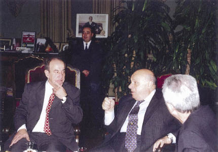

25 Şubat 1996’da İstanbul Üniversitesi, Cumhurbaşkanı Denktaş’a “Fahri Hukuk Doktora Unvanı” verdi. Bilmem şu kadar fakültesi, elli bin öğrencisi ve beş yüz yıllık geçmişi olan, tarihi giriş kapısı Türkiye Cumhuriyeti’nin kağıt paraları üzerine nakşedilmiş, Türkiye’nin Cumhuriyet tarihinde sosyal ve politik olayları yönlendirilmiş koskoca İstanbul Üniversitesi, dünyaya bazen tek başına kafa tutabilen yine koskoca bir lidere, Rauf Denktaş’a fahri doktorluk payesini veriyordu.
Bu aslında, oldukça dengeli bir alışverişti; Denktaş da İstanbul Üniversitesi’ne bazı şeyler veriyordu. Verdiği konferansta yaptığı konuşma, izleyenlere tarihi bütün derinliğiyle, başından beri Kıbrıs Türk Halkı’nın bağımsızlık mücadelesinin içinde bulunan bir liderin sözcükleriyle sunuyordu.
Olayları yaşayan, yönlendiren, ter döken bir adamın öyküsüydü bu. Kıbrıs Türk Halkı’nın bağımsızlık mücadelesiyle özdeşleşmiş, iç içe geçmiş bir tarih, yaşayan adamın sözcükleriyle bir belge gibi, salonun içine düşüyordu.

2001 İstanbul Üniversitesi, Erol Manisalı, Rauf Denktaş, Kemal Alemdaroğlu
Denktaş orada, halkının bağımsızlık mücadelesini anlatmıyor, sanki kendi özgeçmişini sergiliyordu. Aslında onun özel yaşamı yoktu, yaşadığı şeyler kendi halkının yaşamıydı. İki şeyi birbirinden ayırmak imkânsızdı; halkının mücadelesini, çektiği ıstırabı sergilerken kendisini anlatıyordu.
Denktaş’ı konuşmasının başında izleyicilere takdim ederken, o salonda bulunan ve Denktaş’ı dinleyecek olanların çok şanslı olduklarını, çünkü karşımızda “bir tarihin, geçmişin derinliklerinden gelen bir liderin,” bizim tanık olmadığımız boyuttaki bir insanın bize söyleyeceklerinin ne kadar eşsiz şeyler olduğunu ifade etmiştim.
Denktaş, mücadelenin başından, adaya kaçak girerken yakalanışına, Makaryos ile neler konuştuğuna, 1974’e kadar özlemle, nasıl Toroslar’a baktığına kadar, bir insanlık dramının yanında, umutlarını, daha sonra kazandıkları özgürlüklerini, insan ve toplum dramının şiirsel ve acılı akışının, acımasız dünya politik çarkları içinde nasıl yürüdüğünü sergiliyordu.
Bir toplumun, bir halkın, uluslararası politikanın ve çıkar çatışmalarının öğütücü taşları arasında nerelerden geçtiğini, bu engebeli yolda, eşlik eden bir insanın nefesi ve teriyle anlatıyordu. Bu aynı zamanda, onun hayat hikâyesiydi.
Duygu ve mantığın birbirinden ayrılmayan iki parça olarak bütünleştiği böyle bir konuşmayı ancak tarihi olaylarla özdeşleşen, olayların bir parçası olan Rauf Denktaş gibi bir insan yapabilirdi.
İstanbul Üniversitesi’nin Beyazıt’ta büyük bir yeşil alanın ortasına bir taht gibi oturan Merkez Binası, bir üniversite binasından çok müzeyi andırır. Salonlar, odalar, eski Harbiye Nezareti’nden kalma tavan işlemeleri, duvar motifleri ve mobilyalarla doludur. II. Abdülhamid’in kendi yaptığı masadan, yüce Atatürk’ün öğrencilerle birlikte ders dinlediği, solmuş siyah beyaz fotoğrafa kadar pek çok şeyi Merkez Bina’da görürsünüz.
Denktaş her zaman yaptığı gibi fotoğraf makinesini çıkardı ve fotoğraf çekmeye başladı. Atatürk’ün fotoğrafına büyük ilgi gösterdi. Değerli insan Rektör Bülent Berkarda’nın odasındaki fotoğrafta bir profesör kürsüde oturmuş olarak ders veriyor, Atatürk de yanda, öğrencilerle birlikte, ayakta dinliyordu.
Denktaş bu tarihî ortamdan çok etkilenmişti. Anadolu’nun güney ucundan, Kıbrıs’tan, yine tarihin içinden gelen bir büyük insan, bu tarihî ortamı tamamlıyor, onun bir parçası oluyordu.